Manual de Moderador
Este es el manual de moderador, una guía para realizar las acciones que estan disponibles como moderador.
Índice
Administrar Canarios
En primer lugar vamos a dirigirnos a nuestros canarios en la esquina superior izquierda de la pantalla

Encontraremos la vista donde se muestran los canarios y las acciones a realizar con ellos.
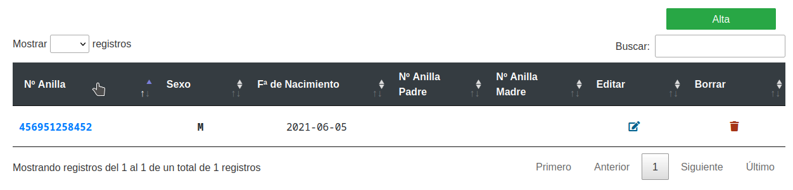
Acciones disponibles
- Crear canario
- Editar canario
- Borrar canario
Crear canario
Como podemos ver en la imagen de arriba tenemos en la esquina superior derecha (o en el centro desde la vista movil) el botón "Alta". Lo siguiente sería rellenar el formulario de alta. El moderador comenzará con la contraseña que le haya asignado el admin, pudiendo cambiarla posteriormente en su panel de usuario.
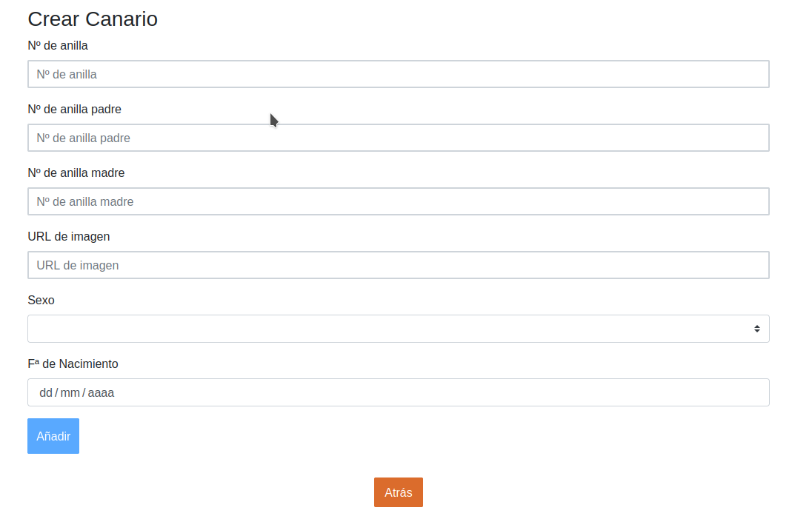
Editar canario
Como podemos ver en la imagen de arriba tenemos en la parte derecha de la tabla el botón "Editar" (Icono de papel con lápiz). Lo siguiente sería rellenar el formulario de edición.
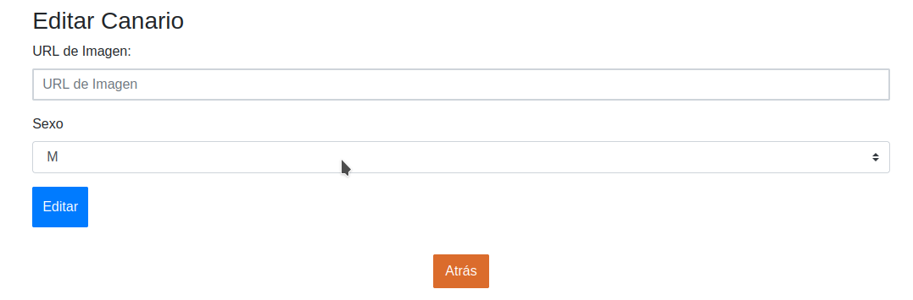
Borrar canario
Como podemos ver en la imagen de arriba tenemos en la parte derecha de la tabla el botón "Borrar" (Icono de papelera).
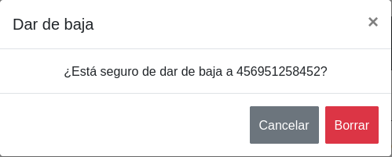
Intercambios
En primer lugar debemos dirigirnos a algún usuario con el que queramos realizar un intercambio (Por miembros de asociación o en la barra de búsqueda en la esquina superior izquierda de la pantalla).
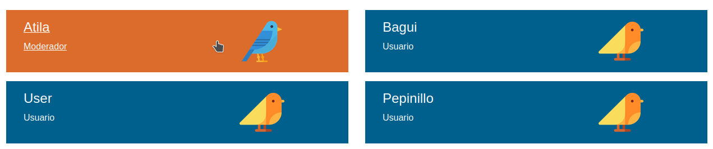
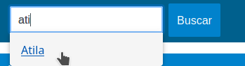
Encontraremos la vista donde se muestran el usuario y las acciones a realizar con ellos. Seleccionaremos "Canarios" para dirigirnos a la tabla de los canarios de dicho usuario.
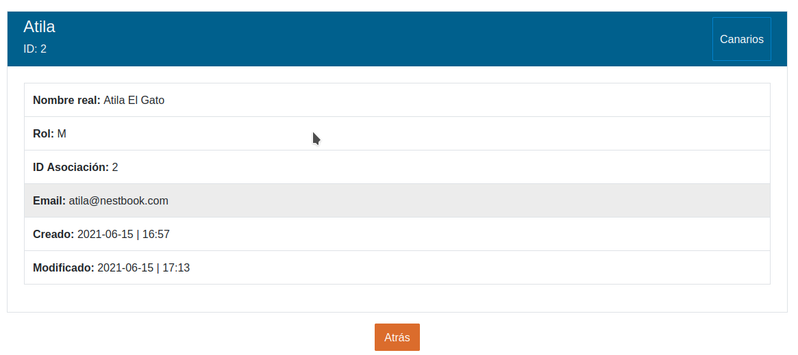
Una vez aquí veremos la vista donde se muestran los canarios del usuario y las acciones a realizar con ellos.
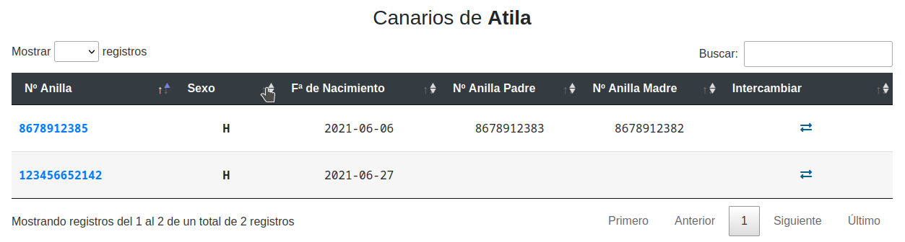
Crear canario
Como podemos ver en la imagen de arriba tenemos en la parte derecha dela tabla el botón "Intercambio (Icono de dos felchas)". Una vez realizado deberemos esperar a que el otro usuario acepte el intercambio.
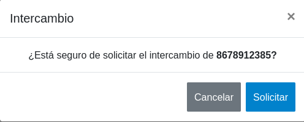
Notificaciones
En primer lugar vamos a dirigirnos a nuestro panel de usuario en la esquina superior derecha de la pantalla
Una vez allí elegiremos "Notificaciones" en nuestra barra de usuario.
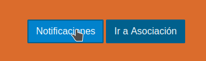
Encontraremos la vista donde se muestran las notificaciones y las acciones a realizar con ellas.
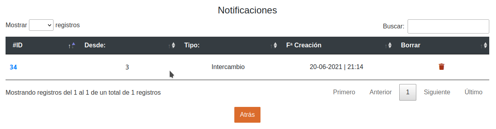
Acciones disponibles
- Aceptar/Rechazar notificación
- Borrar notificación
Aceptar/Rechazar notificación
Como podemos ver en la imagen de arriba tenemos en la parte izquierda de la tabla el enlace a la notificación.
Lo siguiente sería hacer click en contenido, que desplegará una ventana modal donde podremos aceptar o rechazar.
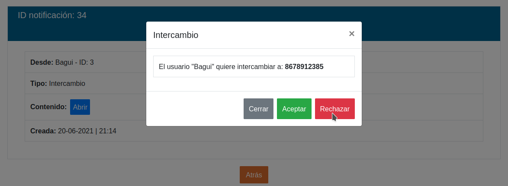
Borrar notificación
Como podemos ver en la imagen de arriba tenemos en la parte derecha de la tabla el botón "Borrar" (Icono de papelera).
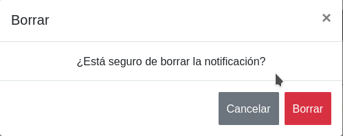
Administrar Usuarios
En primer lugar vamos a dirigirnos a nuestro panel de usuario en la esquina superior derecha de la pantalla
Una vez allí elegiremos administrar usuarios.
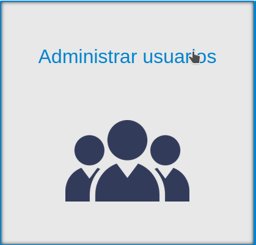
Encontraremos la vista donde se muestran los usuarios y las acciones a realizar con ellos.
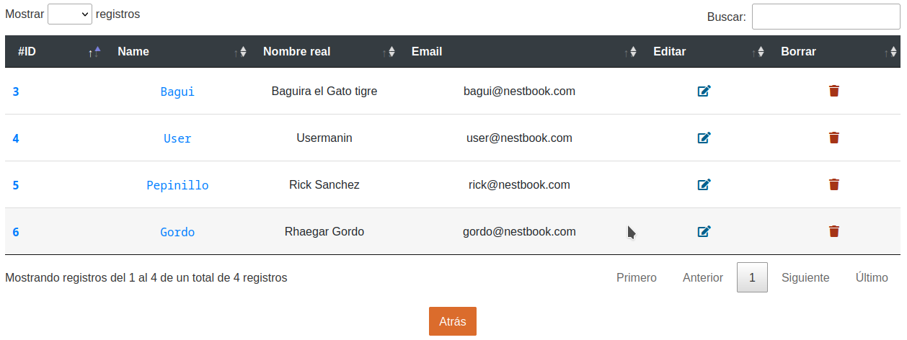
Acciones disponibles
- Editar usuario
- Borrar usuario
Editar usuario
Como podemos ver en la imagen de arriba tenemos en la parte derecha de la tabla el botón "Editar" (Icono de papel con lápiz). Lo siguiente sería rellenar el formulario de edición.
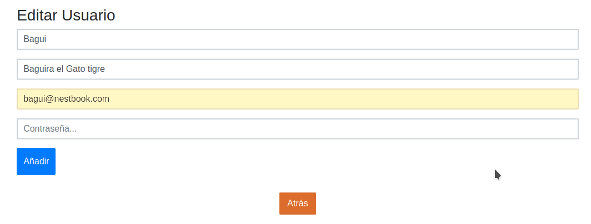
Borrar usuario
Como podemos ver en la imagen de arriba tenemos en la parte derecha de la tabla el botón "Borrar" (Icono de papelera).
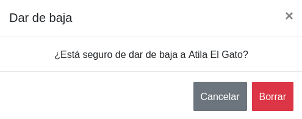
Administrar Publicaciones
En primer lugar vamos a dirigirnos a nuestro panel de usuario en la esquina superior derecha de la pantalla
Una vez allí elegiremos administrar publicaciones.

Encontraremos la vista donde se muestran los publicaciones y las acciones a realizar con ellos.
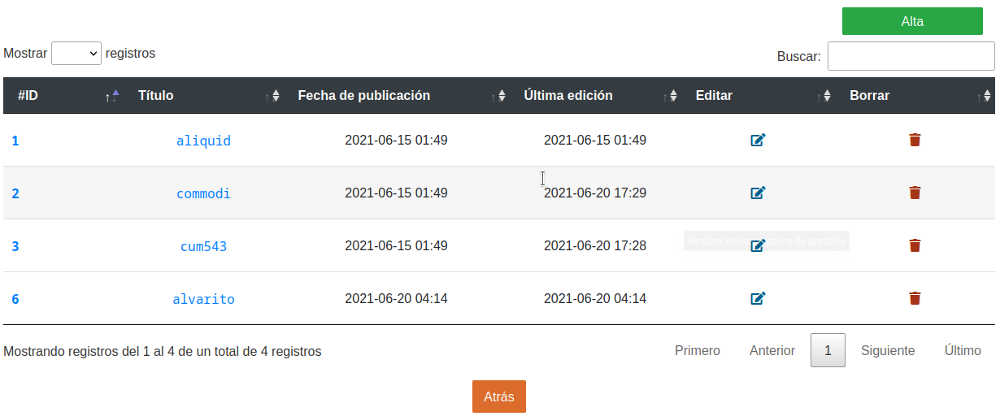
Acciones disponibles
- Crear publicación
- Editar publicación
- Borrar publicación
Crear publicación
Como podemos ver en la imagen de arriba tenemos en la esquina superior derecha (o en el centro desde la vista movil) el botón "Alta". Lo siguiente sería rellenar el formulario de alta.
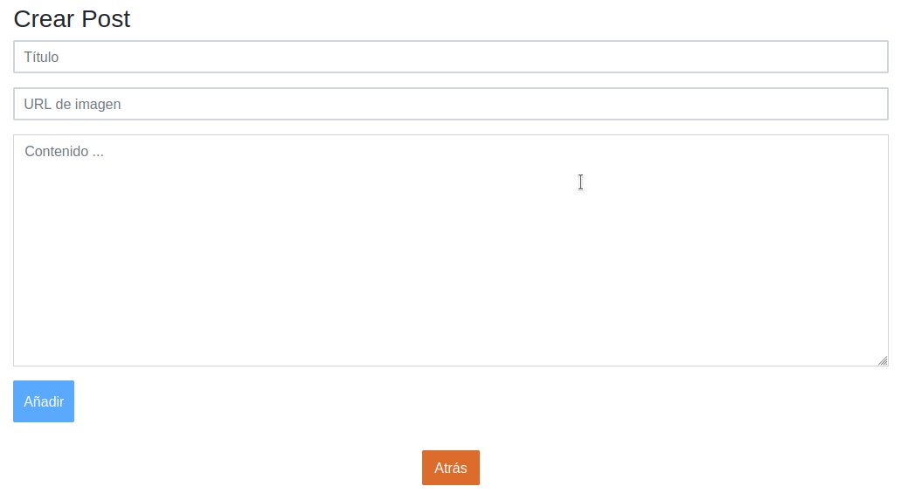
Editar publicación
Como podemos ver en la imagen de arriba tenemos en la parte derecha de la tabla el botón "Editar" (Icono de papel con lápiz). Lo siguiente sería rellenar el formulario de edición.

Borrar publicación
Como podemos ver en la imagen de arriba tenemos en la parte derecha de la tabla el botón "Borrar" (Icono de papelera).